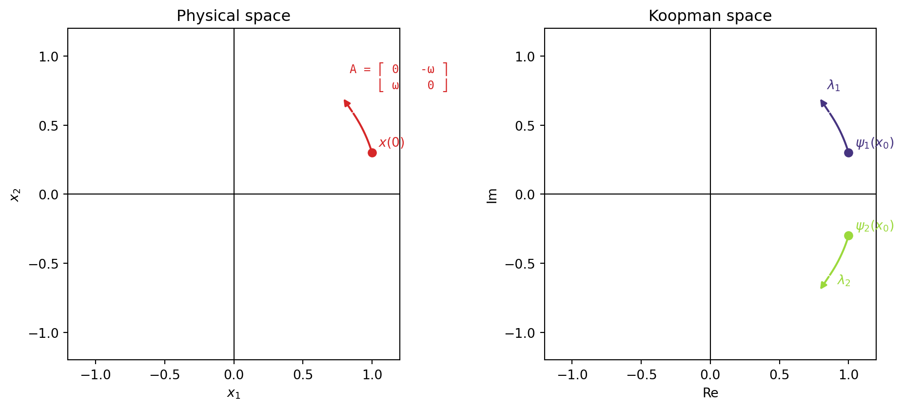

Show plotting code
import numpy as np
from scipy.linalg import expm
import matplotlib.pyplot as plt
omega = 1.0
A = np.array([[0, -omega],
[omega, 0]])
x0 = np.array([1.0, 0.3]) # initial condition
t = np.linspace(0, 0.3, 200) # only the start of the trajectory
# physical-space trajectory: x(t) = e^{At} x0
x_t = np.array([expm(A * ti) @ x0 for ti in t])
# eigenfunctions: psi_1(x) = l1 . x, psi_2(x) = l2 . x
l1 = np.array([1, 1j])
l2 = np.array([1, -1j])
psi1 = x_t @ l1
psi2 = x_t @ l2
lambda1, lambda2 = 1j * omega, -1j * omega
arrow_len = 0.15
fig, axes = plt.subplots(1, 2, figsize=(10, 4.5))
ax = axes[0]
ax.plot(x_t[:, 0], x_t[:, 1], color="tab:red")
ax.scatter([x0[0]], [x0[1]], color="tab:red", zorder=5)
ax.annotate(r"$x(0)$", xy=(x0[0], x0[1]), xytext=(5, 5), textcoords="offset points", color="tab:red")
v_phys = A @ x_t[-1] # dx/dt = A x, at the endpoint
v_phys = v_phys / np.linalg.norm(v_phys) * arrow_len
ax.annotate("", xy=x_t[-1] + v_phys, xytext=x_t[-1],
arrowprops=dict(arrowstyle="-|>", color="tab:red", lw=1.5))
A_label = "A = ⎡ 0 -ω ⎤\n ⎣ ω 0 ⎦"
ax.annotate(A_label, xy=x_t[-1] + v_phys, xytext=(6, 6), textcoords="offset points",
color="tab:red", fontsize=9, family="monospace")
ax.axhline(0, color="black", lw=0.8)
ax.axvline(0, color="black", lw=0.8)
ax.set_xlabel(r"$x_1$")
ax.set_ylabel(r"$x_2$")
ax.set_title("Physical space")
ax.set_xlim(-1.2, 1.2)
ax.set_ylim(-1.2, 1.2)
ax.set_aspect("equal")
ax = axes[1]
c1, c2 = plt.cm.viridis(0.15), plt.cm.viridis(0.85) # viridis colors for psi_1, psi_2
ax.plot(psi1.real, psi1.imag, color=c1)
ax.plot(psi2.real, psi2.imag, color=c2)
ax.scatter([psi1[0].real], [psi1[0].imag], color=c1, zorder=5)
ax.scatter([psi2[0].real], [psi2[0].imag], color=c2, zorder=5)
ax.annotate(r"$\psi_1(x_0)$", xy=(psi1[0].real, psi1[0].imag), xytext=(5, 5), textcoords="offset points", color=c1)
ax.annotate(r"$\psi_2(x_0)$", xy=(psi2[0].real, psi2[0].imag), xytext=(5, 5), textcoords="offset points", color=c2)
arrow_specs = [(psi1[-1], lambda1, c1, r"$\lambda_1$", (6, 6)),
(psi2[-1], lambda2, c2, r"$\lambda_2$", (14, 6))]
for psi_end, lam, color, lam_label, label_offset in arrow_specs:
v = lam * psi_end # dpsi/dt = lambda psi, at the endpoint
v = v / abs(v) * arrow_len
end = psi_end + v
ax.annotate("", xy=(end.real, end.imag), xytext=(psi_end.real, psi_end.imag),
arrowprops=dict(arrowstyle="-|>", color=color, lw=1.5))
ax.annotate(lam_label, xy=(end.real, end.imag), xytext=label_offset,
textcoords="offset points", color=color)
ax.axhline(0, color="black", lw=0.8)
ax.axvline(0, color="black", lw=0.8)
ax.set_xlabel("Re")
ax.set_ylabel("Im")
ax.set_title("Koopman space")
ax.set_xlim(-1.2, 1.2)
ax.set_ylim(-1.2, 1.2)
ax.set_aspect("equal")
plt.tight_layout()
plt.show()